Our Blogs
Insights, ideas & industry updates from Assured Advertising
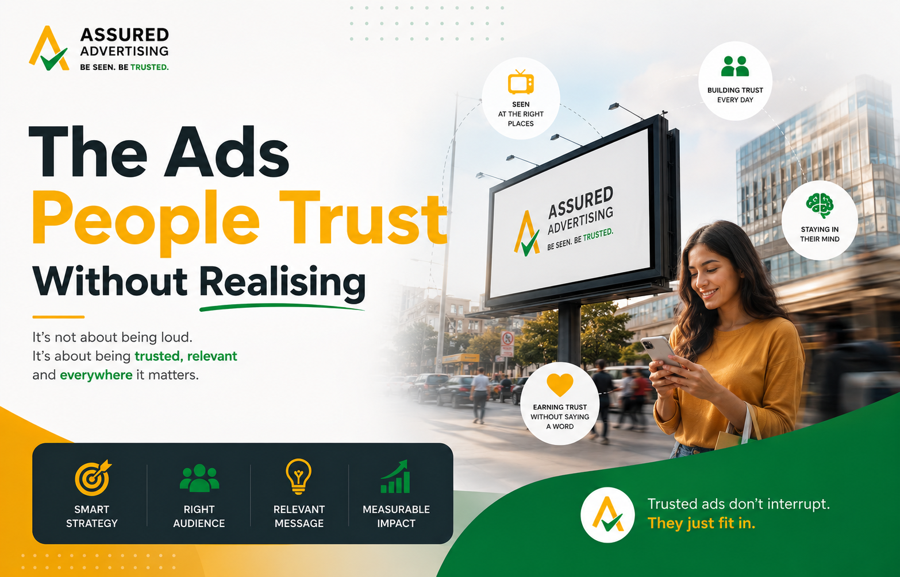
The Ads People Trust Without Realising
Not every advertisement earns trust by loudly asking for it. Some ads build trust quietly through where they appear, how often they are seen and the credibility of the environment around them. That is the hidden strength of trusted advertising. It does not always depend on aggressive claims or hard-selling messages. Often, trust is created before the audience consciously evaluates the brand.
Read More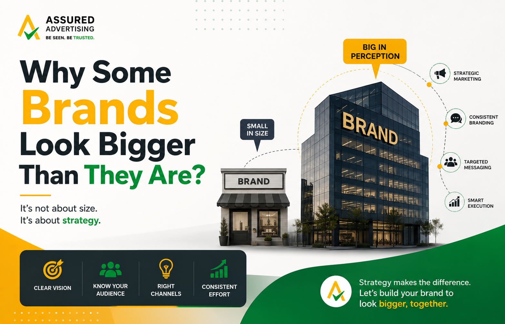
Why Some Brands Look Bigger Than They Are?
Some brands are not larger than their competitors. They simply appear larger in the market. That difference is usually built through consistent brand visibility, disciplined media planning and the ability to show up in places that make the brand feel established, trusted, and serious. For growing businesses, looking bigger often comes down to media placement, public recall and perceived brand scale. People rarely verify how big a company really is.
Read More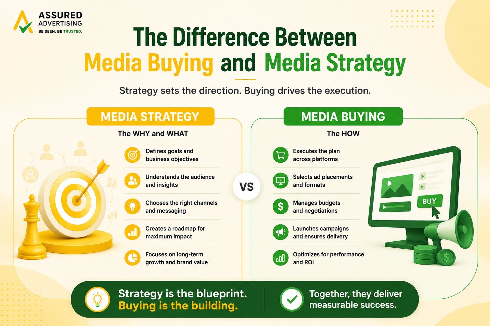
Media Planning and Buying: Why Strategy Comes Before Placement
Most brands do not waste money because they advertise. They waste money because they buy media before knowing what the placement is supposed to achieve. That is the real difference between media buying and media strategy. Media buying secures advertising space. It covers rates, negotiations, formats, schedules, placements and execution.
Read More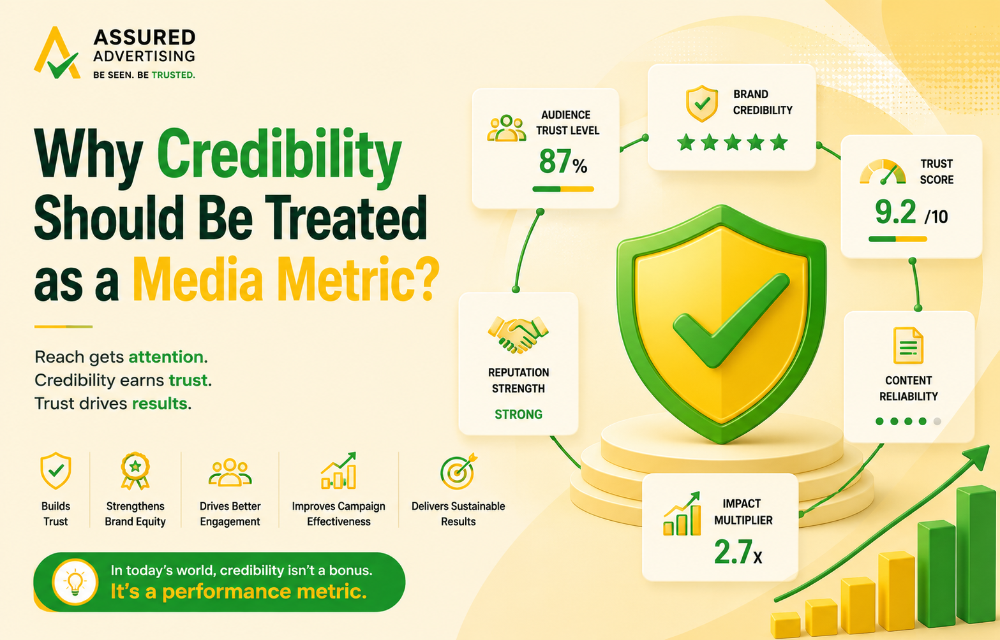
Why Credibility Should Be Treated as a Media Metric?
Most media plans are judged by numbers that are easy to count: reach, impressions, clicks, views, frequency, enquiries and conversions. These metrics matter, but they often miss one of advertising’s most valuable outcomes: trust. In media planning strategy, credibility is the difference between being noticed and being believed.A campaign can reach thousands of people and still fail to make the brand feel serious.
Read More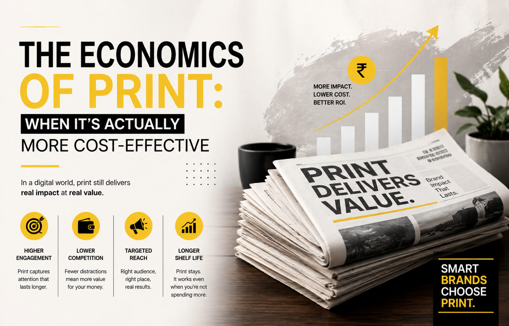
The Economics of Print: When It’s Actually More Cost-Effective
For years, brands have been told that digital is always cheaper, faster and more efficient. A click looks cheaper than a newspaper ad. A social impression looks lighter on the budget than a magazine placement. A dashboard feels more precise than a print insertion. But cost-effectiveness is not about what looks cheaper upfront. It is about what creates stronger business impact for the money spent.
Read More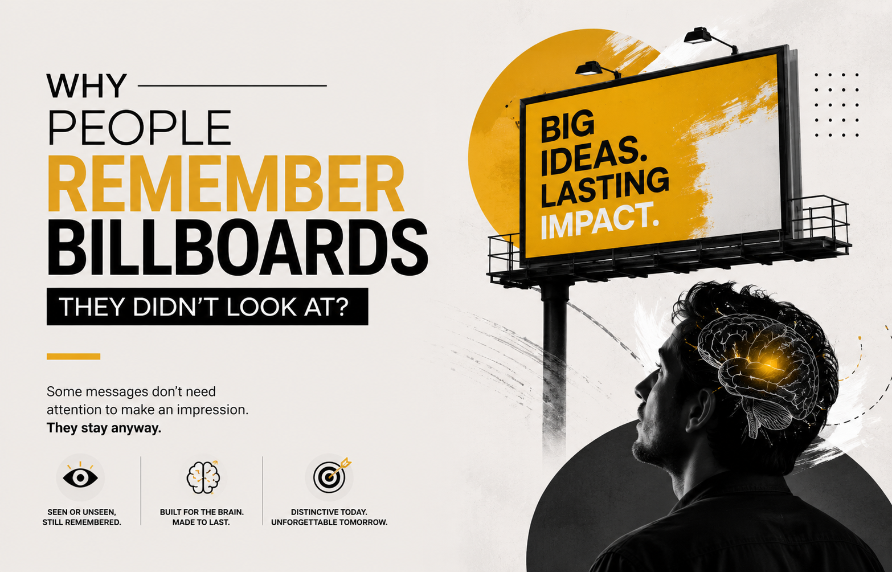
Why People Remember Billboards They Didn’t Look At?
Most people think attention begins only when someone actively looks at an advertisement. In digital media, this belief has become almost automatic. A person clicks, watches, scrolls, pauses or engages, and only then is the ad considered valuable. But the real world does not work that neatly. Human memory is quieter, stranger and more powerful than a dashboard can easily explain.
Read More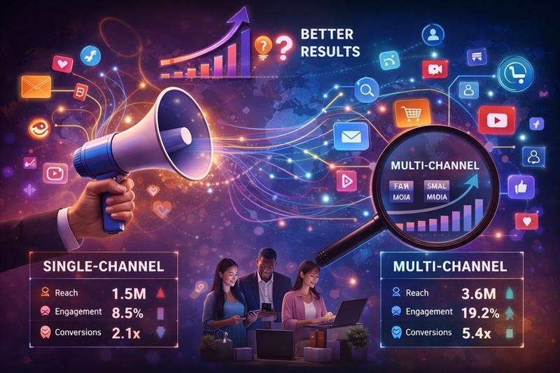
The Case for Multi-Channel: Why Brands That Spread Their Message Win
Every brand wants to be seen. But being seen once, on one platform, by one slice of your audience? That is not a campaign, that is a missed opportunity. In today’s cluttered media environment, consumers do not live on a single channel. They wake up to the radio, commute past billboards, scroll through news over morning chai, and wind down with television in the evening.
Read MoreRadio Advertising: The Fastest ROI You're Not Using
Every brand wants results. Fast, measurable, real-world results. And in a media landscape where the average digital display ad is ignored within 1.7 seconds, one channel continues to deliver - quietly, consistently and almost always underestimated.According to Nielsen Audio research, radio reaches over 90% of adults on a weekly basis -more than any other medium including digital.
Read More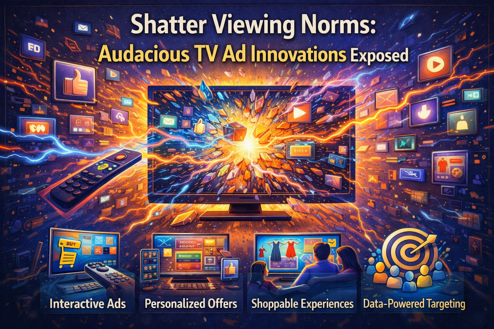
Shatter Viewing Norms: Audacious TV Ad Innovations Exposed
Remember when a TV ad meant pausing your conversation, staring at a box in the corner of the room, and waiting for thirty seconds to pass so your show could resume? That box has changed. And so has everything else.The television commercial you grew up with—predictable, passive, politely ignored—has shape-shifted into something far more extraordinary.
Read More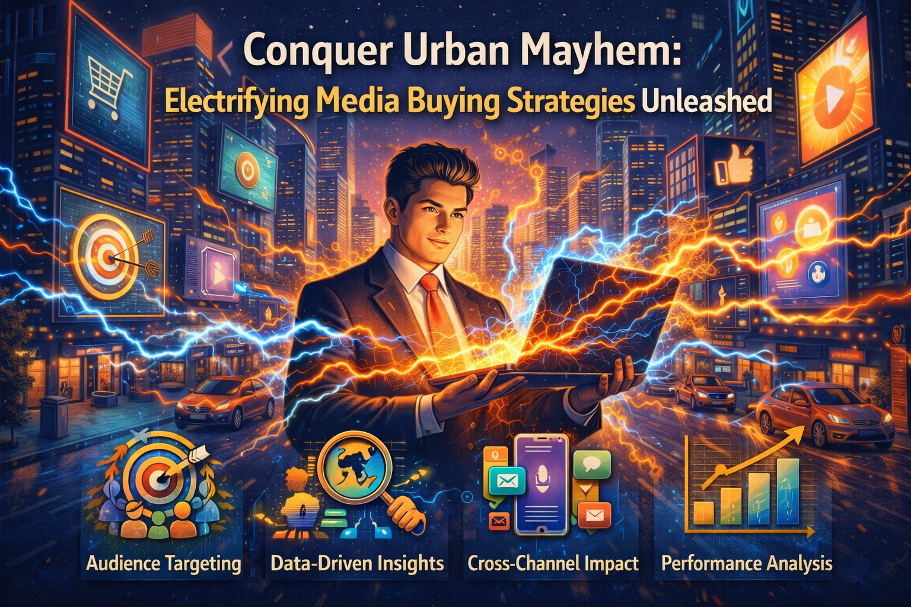
Conquer Urban Mayhem: Electrifying Media Buying Strategies Unleashed
Mumbai moves at a pace that leaves even its residents breathless. Local trains crammed beyond capacity. Roads where minutes stretch into hours. Billboards stacked upon billboards, each screaming for attention that grows scarcer by the second. In this city, your brand isn’t just competing with competitors; it’s competing with everything.
Read More.png)
Why Front-Page Ads Command Attention?
You scroll past fifty ads before breakfast. Your thumb has memorized the muscle memory of skipping YouTube promos. Pop-up blockers, ad fatigue, banner blindness—digital noise has trained an entire generation to look away. But a newspaper lands on the table. The front page stares up at you. And for that moment, you're not scrolling. You're reading.
Read More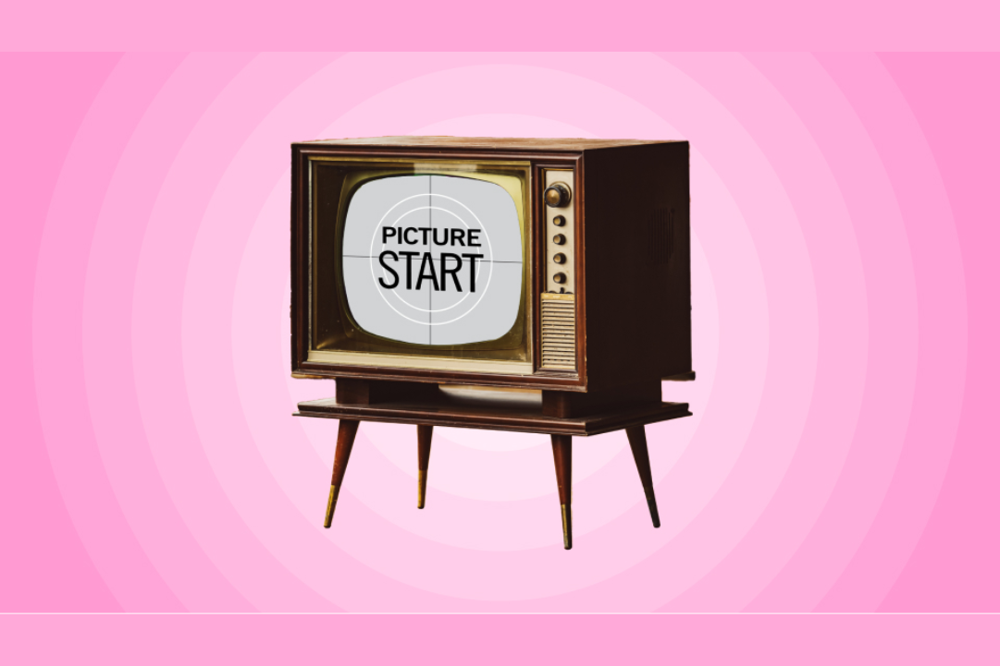
How TV Ads Evolved into Powerhouses
Thirty years ago, a 30-second spot on Doordarshan meant instant national fame. Today, fragmented screens and ad fatigue threaten that legacy. Yet television has not declined—it has transformed.For Mumbai brands navigating a crowded media environment, the question is no longer TV or digital? It is how do we use TV to anchor trust?
Read MoreIn an Age of Digital Clutter, Print Media is a Calculated Act of Brand Defiance
In a world perpetually buzzing with notifications, where screens demand our attention from dawn to dusk, a bold and contrarian statement is being made not with a flashy pixel, but with the tangible turn of a page.
Read More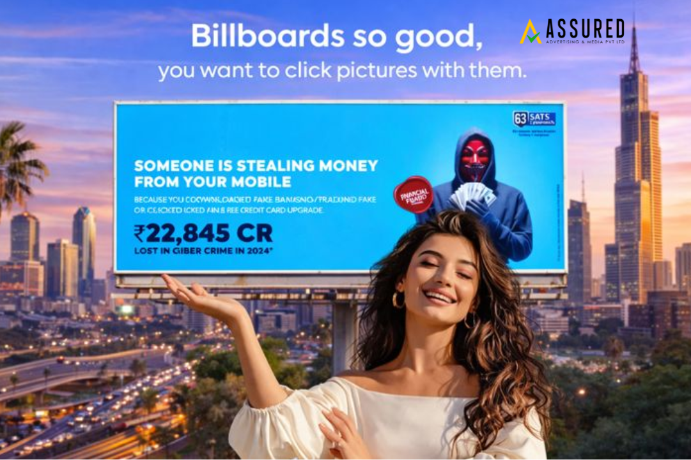
The Resurgence of OOH Advertising in the Digital Age: How Billboards are Going High-Tech
Imagine a world where the cityscape itself talks back—where a billboard doesn’t just broadcast a message but starts a conversation, reacts to the weather, or delivers a personalized offer as you walk by.
Read More